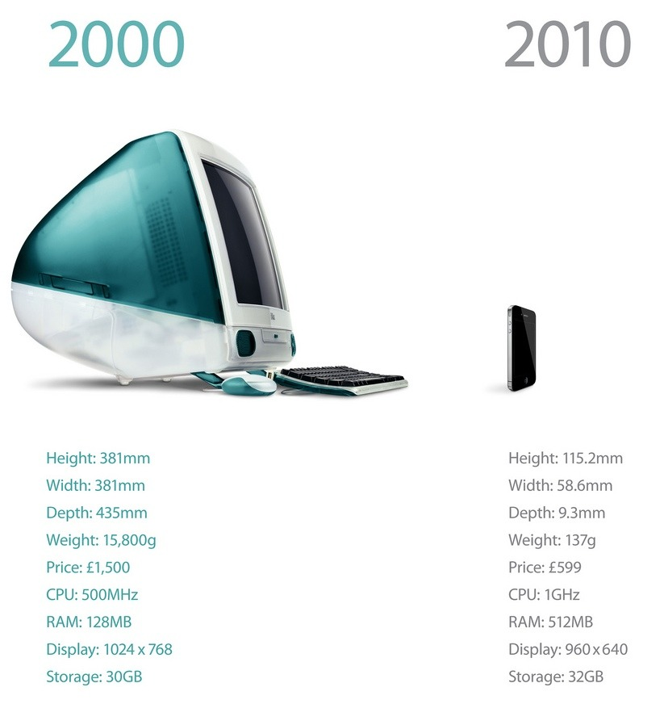
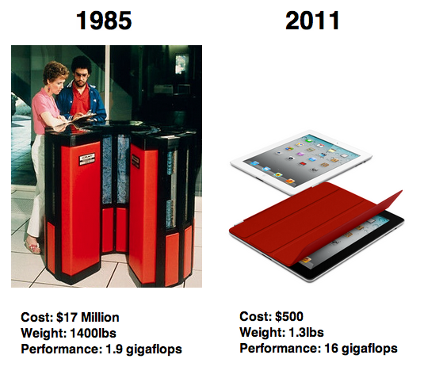

Personal Software Agents In An Information Economy
Originally published at https://singularityhacker.com/personal-software-agents-in-an-information-economy
The basic principle of an information economy is that the individuals who can perform the most efficient, creative, and useful transformations on data make the most money. Thats an over simplification but it still gets at the heart of the matter. Well what happens when the tools of information processing become dramatically more powerful? Productivity and value explode. Today, a teenager with a $200 tablet computer can process information with greater efficiency than an entire organization of fifty years ago.
This is nothing compared to the productivity increases society is about to see in the next fifty years. We are on the verge of seeing an explosion in personal software agents.
A software agent is a software program that acts for a user or other program in a relationship of agency. - Wikipedia/Software_agents
Think little personal AI’s that tirelessly do our bidding. Lets look at the first players in this budding market.
At the high end, we have IBM’s Watson but it will not be long before the same kind intelligence is available in your handset. Watson 2.0 will be mobile phone accessible.
Can we be confident that this kind of technological acceleration will continue. I’ll let the images below answer that question.

On the left we have a Cray 2 supercomputer from 1985 and on the right we have an iPad 2 from 2011.

The present impact of emerging knowledge systems on different domains:
Watson on Law: Yale Law Journal Ponders Watson as a Judge
Watson on Medicin: IBM’s Watson supercomputer to diagnose patients
Watson on Wall Street: IBM Watson heads to Wall Street
Misc links of interest:
- Siri api: What Would a Siri API Look Like? - Get your AI assistant now: Cydia app to make Siri more like a personal assistant - Intelligent Agents 101.pdf